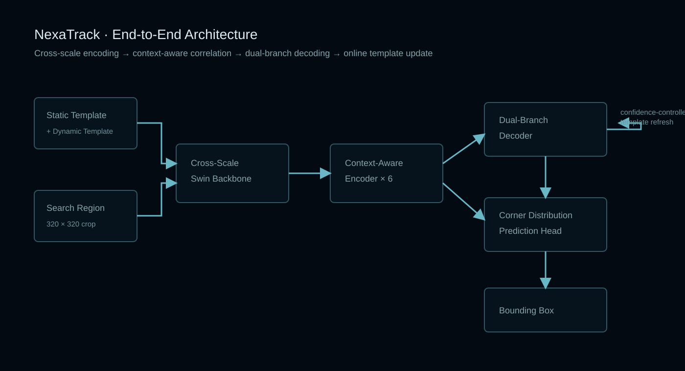

Visual Tracking · PyTorch
NexaTrack
Context-aware cross-scale Transformer tracking for robust visual target localization.
A single-object tracking system combining cross-scale shifted-window features, nested context-aware attention, dual-branch decoding and confidence-controlled template updates.
TaskSingle-object tracking
BackboneCross-scale shifted-window
Token width256
Encoder6 layers · 4 heads
Architecture visual

Architecture / Core modules
Nested context-aware attention
Gaussian target weighting
Dual-branch decoding
Corner distribution head
Dynamic template update
End-to-end flow
01Static + dynamic templates
02Cross-scale feature fusion
03Context-aware encoder
04Dual-branch decoder
05Corner distribution prediction
06Confidence-controlled update
Source code, configuration, training or runtime instructions and implementation notes are maintained in the repository.
Open NexaTrack on GitHub ↗